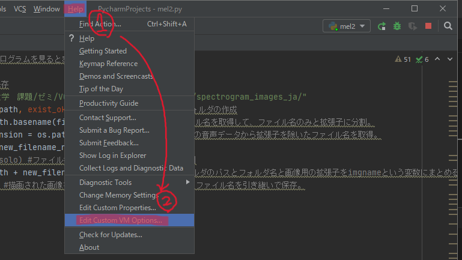
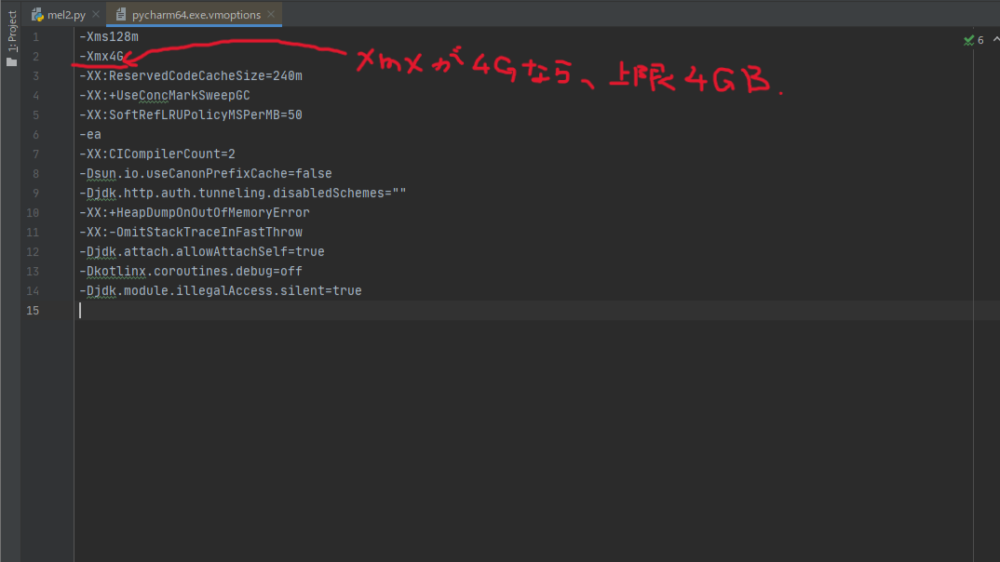

大量の描画をする際のエラー対処(2022/01/15)
●エラーの内容
音声ファイルを投げると、音声波形画像に変換して返してくれるコードの実行中、
369ファイル目の変換が完了したところで、
fail to allocate bitmap
というエラーをはいて処理落ちしてしまう。何回やっても同じエラー。
●エラーの原因
①メモリー不足
②Matplotlibで大量のグラフを描画する際の処理落ち
●エラーの対処法
結論から言えば、今回の私のエラーは②を解決することで無くなりました。
しかし、①と②どちらの原因も考慮し試行錯誤したので共有します。
①メモリー不足
→処理中に発生したデータは、スタックに堆積し続けるので、一気に実行する処理を小分けにしたり、処理に使わなくなったデータを削除することでメモリーを開放する必要がある。
・リストを分割してFor文でループさせることで、リスト内のデータを一気に処理するのではなく小分けずつ処理。
・Del文やplt.close()、plt.clf()、plt.cla()などで使わなくなった要素を削除、gc.collect()で削除した要素の分のメモリーを直ちに解放。
※しかし、gc.collect()は乱用注意らしいので、メモリー解放する必要がある際は自分の症例などをしっかり把握してから試すのがいいと思います。
・PyCharmを利用している場合は、メモリヒープというメモリ使用量の上限設定があるので、必要な分までVMoptionのXmxの値を設定変更する(図解あり)。


②Matplotlibで大量のグラフを描画する際の処理落ち
→Matplotlibで大量のグラフを描画する際、Matplotlibのバックエンド設定をAggに指定する必要がある。
その際、記述の順番に注意が必要。
●失敗する記述
import matplotlib
import matplotlib.pyplot as plt
matplotlib.use('Agg')
●正しい記述
import matplotlib
matplotlib.use('Agg')
import matplotlib.pyplot as plt
理由→pyplotをインポートするより先に、Matplotlib自体のバックエンド設定を定義しておく必要があるから。
●参考にしたサイト
・https://teratail.com/questions/282270
・https://fijixfiji.hatenablog.com/entry/2016/12/17/001226
・https://www.sejuku.net/blog/74447
・https://tipstour.net/python-list-slice
・https://hytmachineworks.hatenablog.com/entry/2018/02/25/230734
本日の投稿はここまで。ありがとうございました。